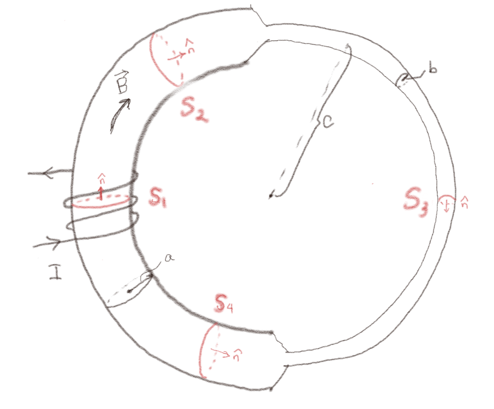

(Lærebok 12.3.1)
(Lærebok 12.3.2)
Figuren viser en magnetisk krets som består av en sylindrisk toroide med ferromagnetisk materiale med en stor \( \mu_r \). Den venstre halvdelen har en radius \( a \) slik at tverrsnittet er \( S_a = \pi a^2 \). Den høyre halvdelen har en radius \( b \) slik at tverrsnittet er \( S_b = \pi b^2 \). Radius til toroiden er \( c \). Anta at magnetfeltet i tverrsnittet \( S_1 \) er \( B_1 \).

a) Hva er fluksen \( \Phi_{B,1} \) av magnetfeltet gjennom \( S_1 \)?
\( B_1 \pi a^2 \)
Vi antar at magnetfeltet er homogent over tverrsnittet. Fluksen er derfor $$ \begin{equation} \Phi_{B,1} = \int_{S_1} \vec{B} \cdot \nhat_1 \d S = B_1 \pi a^2 \; . \tag{26} \end{equation} $$
b) Hva er fluksen \( \Phi_{B,2} \) gjennom \( S_2 \)?
\( B_1 \pi a^2 \)
Fluksen er bevart langs kretsen. Den er derfor det samme som for \( S_1 \).
c) Hva er fluksen \( \Phi_{B,3} \) gjennom \( S_3 \)?
\( B_1 \pi a^2 \)
Fluksen er bevart langs kretsen. Den er derfor det samme som for \( S_1 \).
d) Hva er fluksen \( \Phi_{B,4} \) gjennom \( S_4 \)?
\( -B_1 \pi a^2 \)
Fluksen er bevart langs kretsen. Men her er flatenormalen tegnet i motsatt retning av \( \vec{B} \)-feltet. Fluksen gjennom overflaten med denne orienteringen er derfor minus den tilsvarende overflaten men med motsatt rettet overflatenormalt. Fluksen er derfor minus fluksen ved \( S_1 \).
e) Hva er magnetfeltet \( B_3 \) i tverrsnittet \( S_3 \)?
\( B_3 = (a/b)^2 B_1 \).
Siden fluksen er bevart og radius ved \( S_3 \) er \( b \) vil fluksen gjennom \( S_3 \) være \( \Phi_{B,3} = B_3 \pi b^2 \). Denne er det samme som gjennom \( S_1 \) hvor \( \Phi_{B,1} = B_1 \pi a^2 \) slik at \( B_3 \pi b^2 = B_1 \pi a^2 \) og \( B_3 = (a/b)^2 B_1 \).
(Lærebok 12.3.3)